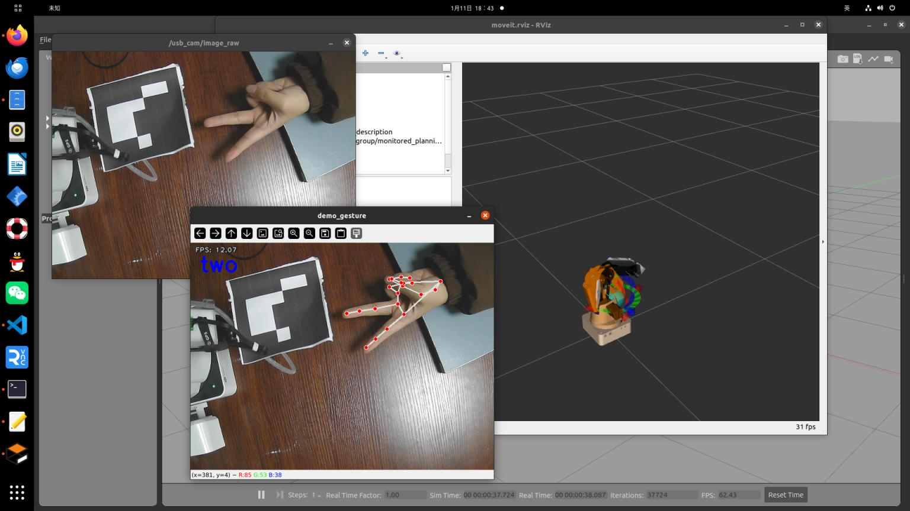

使用手势简单的控制机械臂
#!/usr/bin/env python3
#coding=utf-8
import os
import sys
import time
import mediapipe as mp
import numpy as np
import threading
import rospy
import cv2
import moveit_commander
from geometry_msgs.msg import PoseStamped
from sensor_msgs.msg import Image
from cv_bridge import CvBridge
# Global variables
img_path = '/home/root1/dobot_ws/src/dobot/images'
img_num = 1
cv_image = np.zeros((480, 640, 3), np.uint8)
mp_drawing = mp.solutions.drawing_utils
mp_hands = mp.solutions.hands
gesture = "none"
gesture_lock = threading.Lock()
bridge = CvBridge()
# Initialize MoveIt
def MoveitJointpose():
moveit_commander.roscpp_initialize(sys.argv)
arm = moveit_commander.MoveGroupCommander('arm')
arm.set_goal_joint_tolerance(0.01)
arm.set_max_velocity_scaling_factor(0.8)
return arm
# Display FPS on the image
def show_fps(img):
global fps
fps_text = 'FPS: {:.2f}'.format(fps)
cv2.putText(img, fps_text, (10, 20), cv2.FONT_HERSHEY_PLAIN, 1.0, (240, 240, 240), 1, cv2.LINE_AA)
return img
# Calculate distance between two points
def distance(point_1, point_2):
return np.sqrt((point_1[0] - point_2[0]) ** 2 + (point_1[1] - point_2[1]) ** 2)
# Calculate angle between two vectors
def vector_2d_angle(v1, v2):
norm_v1_v2 = np.linalg.norm(v1) * np.linalg.norm(v2)
cos = v1.dot(v2) / (norm_v1_v2)
sin = np.cross(v1, v2) / (norm_v1_v2)
angle = np.degrees(np.arctan2(sin, cos))
return angle
# Convert hand landmarks to image coordinates
def get_hand_landmarks(img_size, landmarks):
w, h = img_size
landmarks = [(lm.x * w, lm.y * h) for lm in landmarks]
return np.array(landmarks)
# Calculate angles of each finger
def hand_angle(landmarks):
angle_list = []
angle_ = vector_2d_angle(landmarks[3] - landmarks[4], landmarks[0] - landmarks[2])
angle_list.append(angle_)
angle_ = vector_2d_angle(landmarks[0] - landmarks[6], landmarks[7] - landmarks[8])
angle_list.append(angle_)
angle_ = vector_2d_angle(landmarks[0] - landmarks[10], landmarks[11] - landmarks[12])
angle_list.append(angle_)
angle_ = vector_2d_angle(landmarks[0] - landmarks[14], landmarks[15] - landmarks[16])
angle_list.append(angle_)
angle_ = vector_2d_angle(landmarks[0] - landmarks[18], landmarks[19] - landmarks[20])
angle_list.append(angle_)
angle_list = [abs(a) for a in angle_list]
return angle_list
# Determine gesture based on finger angles
def h_gesture(angle_list):
# Thresholds for angles
thr_angle = 65.
thr_angle_thumb = 53.
thr_angle_s = 49.
gesture_str = "none"
if (angle_list[0] > thr_angle_thumb) and (angle_list[1] > thr_angle) and (angle_list[2] > thr_angle) and (angle_list[3] > thr_angle) and (angle_list[4] > thr_angle):
gesture_str = "fist"
# Add other gesture conditions here
return gesture_str
# Image callback function
def callback(data):
global cv_image
try:
cv_image = bridge.imgmsg_to_cv2(data, "bgr8")
except CvBridgeError as e:
print(e)
# Main function for gesture inference
def infer():
global img_num, cv_image, gesture
with mp_hands.Hands(min_detection_confidence=0.5, min_tracking_confidence=0.5) as hands:
while not rospy.is_shutdown():
image = cv_image.copy()
results = hands.process(cv2.cvtColor(image, cv2.COLOR_BGR2RGB))
gesture_str = "none"
if results.multi_hand_landmarks:
for hand_landmarks in results.multi_hand_landmarks:
mp_drawing.draw_landmarks(image, hand_landmarks, mp_hands.HAND_CONNECTIONS)
landmarks = get_hand_landmarks((image.shape[1], image.shape[0]), hand_landmarks.landmark)
angle_list = hand_angle(landmarks)
gesture_str = h_gesture(angle_list)
if gesture_str != "none":
break
with gesture_lock:
gesture = gesture_str
image = show_fps(image)
cv2.putText(image, gesture_str, (20, 60), cv2.FONT_HERSHEY_SIMPLEX, 1.5, (255, 0, 0), 4)
cv2.imshow('demo_gesture', image)
key_val = cv2.waitKey(33)
if key_val == ord('c'):
cv2.imwrite(os.path.join(img_path, f'{img_num}.jpg'), image)
img_num += 1
# Thread for acting based on detected gesture
def infer_act():
global gesture, arm
while not rospy.is_shutdown():
with gesture_lock:
current_gesture = gesture
if current_gesture == "one":
arm.set_named_target('Home')
arm.go()
rospy.sleep(1)
elif current_gesture == "two":
arm.set_named_target('eye_hand')
arm.go()
rospy.sleep(1)
time.sleep(0.1)
if __name__ == '__main__':
rospy.init_node("demo_gesture")
arm = MoveitJointpose()
rospy.loginfo("Starting gesture recognition")
image_sub = rospy.Subscriber("/usb_cam/image_raw", Image, callback)
try:
thread = threading.Thread(target=infer)
thread_act = threading.Thread(target=infer_act)
thread.start()
thread_act.start()
thread.join()
thread_act.join()
rospy.spin()
except KeyboardInterrupt:
print("Gesture recognition closed")
cv2.destroyAllWindows()
